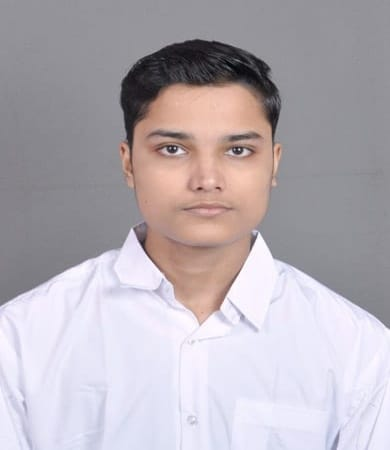

Ravish Kumar

Summary
I am hardworking and dedicated towards dsa and web development and i also want to improve my communication skills
Education
- Undergraduate, Currently in 3rd year doing Bachelor of Technology in Computer Science Engineering in Indian Institute of Information Technology, Tiruchirappalli, Tamil Nadu, India.
Tech Experience
Skills
- Playing online FPS Games like bgmi and offline games like badminton. ⭐️⭐️⭐️⭐️⭐️
- Solving dsa problems and making consistency on gfg potd.⭐️⭐️⭐️⭐️⭐️
- Having typing speed of about 70wpm and 190 days streak in duolingo.⭐️⭐️⭐️⭐️⭐️
- Grasping challenging things around faster and having faster understandiing of what to do. ⭐️⭐️⭐️⭐️⭐️
Awards and Certifications
- Holding 1st position on 100m and 2nd position on 400 meter relay in prothymos.
- Completed Typing course and got certificate from typing.com
- Got Ace Dominator in bgmi and beated goblin in scrims 1v1.
- Highest kills in semifinals of mini militia of college esports tournament.
- Qualified till round 2 in tech trivia and got 4th rank in Hackathon.
Others